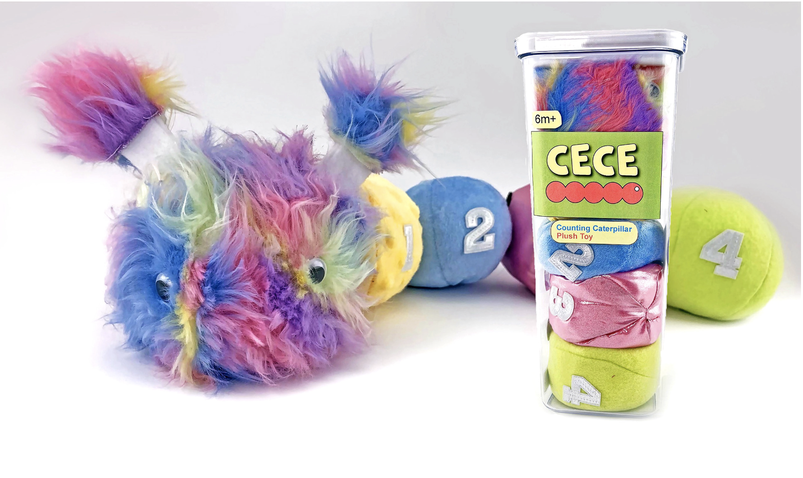

Cece the Counting Caterpillar
An affordable and educationally enriching baby toy, adhering to legal toy regulations, through a process that includes designing multiple prototypes, conducting user testing, interviews, and thorough research from concept to final production
The Brief
Problem Statement: Most parents expect their children to be able to walk, talk, sing, count, and recite their ABC's before they enter elementary school. A growing demand is being placed on infants and toddlers to develop their cognitive abilities and fine motor skills during the first three years of life. As a child approaches one year of age, they are beginning to explore the world around them. Use this curiosity to engage the child and teach developmental skills.
Design Statement: Design, market, and test a multi-use educational toy that teaches a developmental skill.
Target Customer: Parents (Purchasers) and 10-12 month old infants (end users).
Constraints:
- Visually stimulating to a child
- Contains multiple shapes, numbers, and letters
- Meets all health and safety codes
- Weighs less than 4 lbs
- Retail cost under $40
Step 1: Initial Ideation
The first phase of this project consisted of both research and sketching. I had to do extensive research on the existing specifications required of a toy for this age group. In order to ensure the safety of the user, there are regulations on material types, sizes of attachments, adhesives applied, and fillings used. I also needed to educated myself on the abilitys of an infant in this age group, and what activities they are capable of performing, as well as beginning to learn. I was also able to interview parents woth children in this age group. Since the parents are the target purchasers, it is important to understand what they are looking for in toys for their children.
Step 2: First Prototype
After the research and ideations, I had lots of ideas on how Cece might actually come together. With a limited budget and strict deadline, I knew I needed to put togehter a cheap low-fideltiy protoype to figure out how to make Cece come to life. I gathered fabric scraps and began sewing. The initial prototype helped me to decide on the sewing pattern, sizes, and material types. I was also able to test multiple fastener options, and conduct "pull tests" to ensure that the attached peices are compliant with federal regulations.

Step 3: The Final Toy
Cece the Counting Caterpillar is an educational and enriching toy for infants that are being introduced to counting. Cece is constructed of segments that have different colors and textures, providing a sensory experience for a child. Cece's segments detach and reattach to promote fine motor skills, as well as introduce the basic concepts of counting and addition.